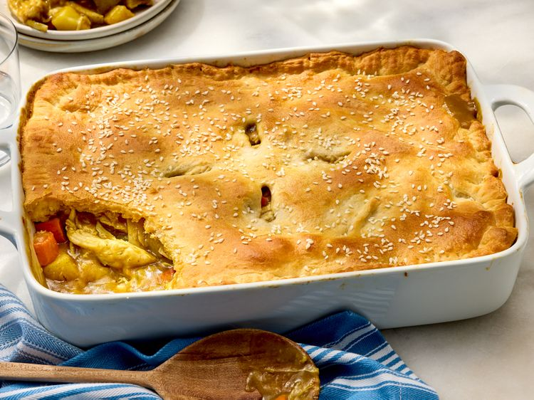

Home
Japanese Curry Chicken Pot Pie Casserole

Ingredients
- cooking spray
- 2 tablespoons neutral cooking oil
- 4 cups (1/2-inch dice) scrubbed, chopped gold potatoes
- 2 cups (1/2-inch dice) chopped, peeled carrots
- 1 cup chopped yellow onion
- 3 cups chicken broth
- 1/2 cup tap water
- 1 (3.2 ounce) package mild Japanese curry mix, broken into pieces (e.g., Golden Curry®)
- 4 cups shredded rotisserie chicken
- 1 (8 ounce) package crescent dough sheet (e.g., Pillsbury®)
- sesame seeds (optional)
Directions
- Gather all ingredients. Preheat the oven to 350°F (180°C) and coat a 13x9-inch baking dish with cooking spray; set aside.
- Heat oil in a large, deep skillet over medium heat. Add potatoes, carrots, and onion; cook, stirring often, until carrots and potatoes are just starting to soften, 6 to 8 minutes.
- Add broth and water. Bring to a boil over medium-high heat, stirring occasionally, about 5 minutes. Reduce heat to medium-low and simmer, stirring occasionally, until vegetables are fork-tender, 8 to 10 minutes.
- Stir in the curry mix until dissolved and the mixture has thickened, 1 to 2 minutes. Remove from heat. Pour mixture into the prepared baking dish; stir in chicken until evenly combined. Wipe the rim of the baking dish clean.
- Unroll the crescent dough (pinch perforations together to seal if necessary). Place dough over the chicken mixture and stretch gently to the edges of the baking dish. Press the edges into the dish and crimp with a fork. Sprinkle with sesame seeds if using and cut 4 small slits into the top of the dough.
- Bake in the preheated oven until the pastry is golden brown and the filling is bubbling, 20 to 25 minutes. Let stand for 10 minutes before serving.